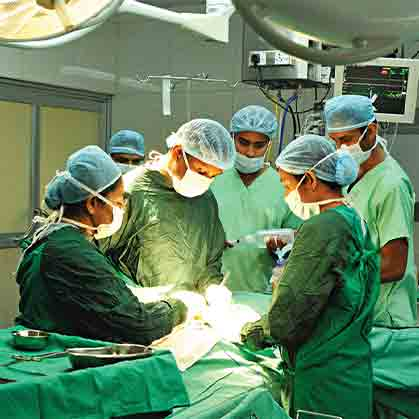
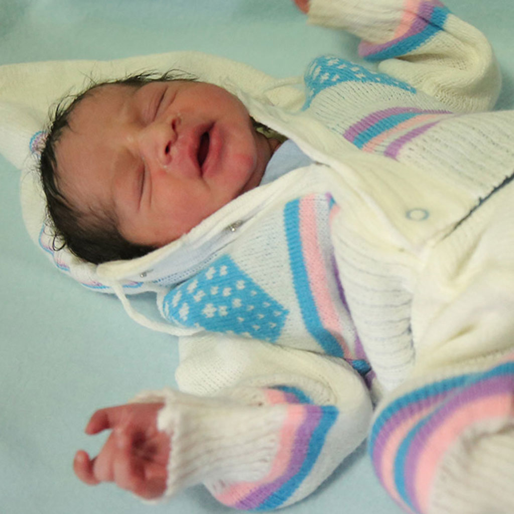
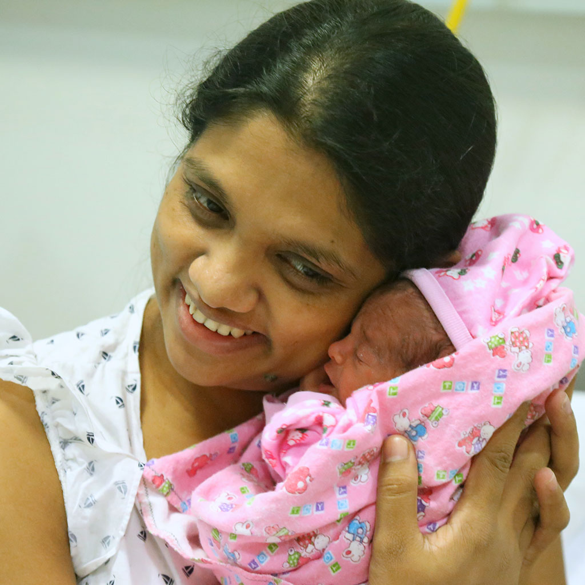
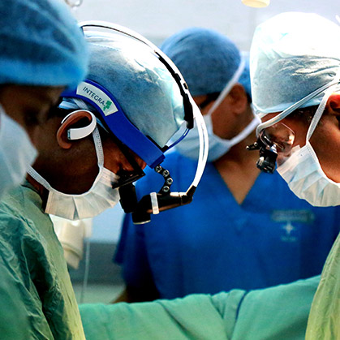

Health Care Hospital
Services
MEDICAL & SURGICAL SERVICES
Health Care Hospitals has revolutionized the Sri Lankan healthcare industry. For over a decade we have played a critical role in the nation’s strategy to provide world-class medical care whilst balancing the equation of affordability and accessibility for all Sri Lankans. For us service excellence is dynamic, which is why we constantly seek to enhance our service delivery in a bid to provide our customers with world-care healthcare experiences. At Heath Care Hospitals, we provide both clinical and non-clinical care, always striving for excellence through a meticulous drive for quality and continuous improvement. We provide 280-bed multi-speciality tertiary care medical services located in seven acres of beautifully landscaped garden. Lanka Hospitals provides state of the art features that are complemented by cutting edge technology and is staffed by a well-experienced and trained team. We provide a complete range of the latest diagnostic and high-end medical technology.
Services We Provide
UROLOGY CARE CENTRE

EYE CLINIC
.jpg)
FERTILITY CENTER

MOTHER & BABY CARE

HEART CENTRE

KIDNEY CARE CENTER